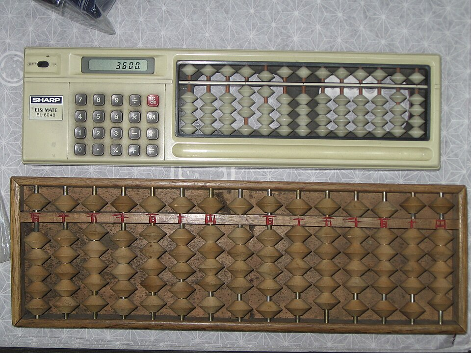
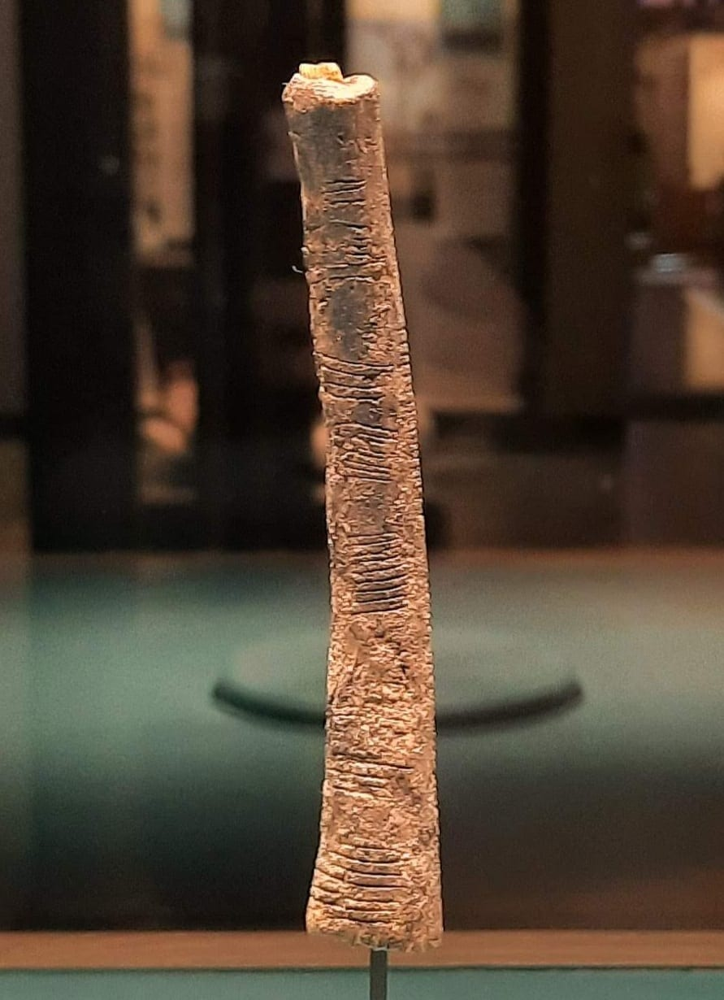

3x + 4 = 19 → x = 5 2³ × 2⁴ = 2⁷ f(x) = 2x + 3, so f(4) = 11
Those three lines are where arithmetic grows up. The first line has a mystery number hiding inside it — and you'll learn to catch it by undoing operations in reverse. The second multiplies powers without really multiplying at all: the exponents just ADD. The third is function notation, the way real algebra talks: f(4) means "feed 4 into the rule 2x + 3." Right now one of those lines might look a little strange. That's okay! By the end of this lesson, all three will feel obvious — and you'll know exactly why each one works.
You already know arithmetic: the four operations, the order they line up in, powers, the properties, negative numbers, and division with remainders. This lesson doesn't replace any of that — it upgrades it. Every idea you already own is about to become a tool for solving equations, because that's what algebra really is: arithmetic with a mystery guest, plus a few moves for cornering the guest.
Why do people care? Because equations are how the world gets described: phone plans, physics formulas, game strategies, savings accounts, rocket trajectories. If you can solve 3x + 4 = 19, you can answer "how many hours can I rent before the budget runs out?" — it's the same question wearing a costume.
In this lesson, you will:
- 1.Learn to solve equations by undoing operations in reverse order
- 2.Evaluate expressions with variables — and speak function notation f(x)
- 3.Learn the laws of exponents, including zero and negative powers
- 4.Distribute, combine like terms, and factor — the properties, upgraded
- 5.Compute with negative numbers in every operation — and see WHY the sign rules work
- 6.Treat fractions as exact division — and clear them from equations in one move
- 7.Solve equations with variables on both sides — and simple systems of two equations
- 8.Solve inequalities (including the famous sign flip) — and let quadratics peek in
- 9.Learn the common mistakes so you never make them
- 10.Practice with 100 problems at the end!
How to use this lesson: Read the sections in order — each one is built on the one before it, and every new term is defined the moment it appears. Every worked example shows every step on its own line, with the reason for the step right next to it. Try every "Your Turn" box with a pencil and paper before reading the answers. Ready? Let's go!
📸 Pictures

A real abacus at a kimono shop in Otaru, Japan. Shopkeepers there have used the soroban abacus for hundreds of years, sliding beads to add and subtract super fast! See source ↓

The Ishango bone, found in what is now the Democratic Republic of the Congo. It's about 20,000 years old, and its scratched tally marks may be one of the oldest records of counting! See source ↓
🗺️ Your lesson map
Undoing Operations — How to Solve an Equation 🧩Lesson 2
Order of Operations with Variables — and f(x) 🎯Lesson 3
The Laws of Exponents 🔍Lesson 4
Distribute, Combine, Factor — The Properties at Work ⚡Lesson 5
Negative Numbers — The Rules, With Proofs 🌟Lesson 6
Fractions Are Division — Exact Answers and Clearing 🛠️Lesson 7
Variables on Both Sides — and Two Mysteries at Once 🎨Lesson 8
Inequalities — Same Moves, One Dark Twist 🏗️Lesson 9
Quadratics Peek In — Two Answers Are Better Than One ⚠️Lesson 10
Watch Out! Common Mistakes 🧠Lesson 11
Review — The Big Picture 🏋️Practice Problems
100 problems to try 🏆Quiz
Test yourself: new questions every time!
📚 Picture Sources
- Picture 1 · Abacus actually in use at kimono shop in Otaru. By Syced. CC0. From Wikimedia Commons: https://commons.wikimedia.org/wiki/File:Abacus_actually_in_use_at_kimono_shop_in_Otaru.jpg
- Picture 2 · Ishango bone (cropped). By Joeykentin. CC BY-SA 4.0. From Wikimedia Commons: https://commons.wikimedia.org/wiki/File:Ishango_bone_(cropped).jpg

.jpg){kind=link}